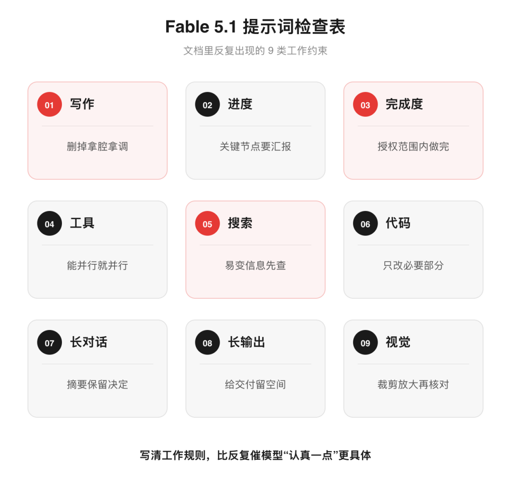

AI范儿 · 深度长文⏱ 8 分钟
Anthropic 最近更新了一份 Claude Fable 5.1 的提示词指南，其中一段突然火了。
Anthropic 在文档里专门讲了怎么去掉 Claude 的“AI 味”。
按照官方的说法，Fable 5.1 的文字比上一代少了套话和生硬术语。有时又会走向另一个极端：信息塞得太密，句子很长，还会加一些没有必要的比喻和修辞。
Anthropic 给这种写法起了一个名字：mannered prose。
翻译成人话，就是“拿腔拿调”。
文档里有两个例子：
“a parameter worth varying”，被写成“a dial worth turning”；
“this point still matters”，被写成“this point earns its keep”。
翻译成中文，大概是：
“一个值得调整的参数”，被写成“一个值得转动的旋钮”；
“这个观点仍然重要”，被写成“这个观点还能发挥作用”。
意思差不多，后面的版本也显得更“会写”。代价是读者需要多绕一下，还可能顺着比喻产生一些原文没有的联想。
官方给出的处理方法只有一句：
Please remove all mannered prose.Anthropic 提示词指南
也就是：请删除所有拿腔拿调、刻意卖弄的表达。
今天很多人在说这个，可能大家已经在之前的模型里碰到过类似问题。
早期的 AI 文章经常堆套话。开头是“随着科技的飞速发展”，中间出现“值得注意的是”，结尾再来一句“未来值得期待”。
模型升级之后，这些老套表达少了。新的问题是，它太想把每句话都写好。普通观点也要配转折、排比和比喻，明明在解释一个问题，读起来却像连续不断的演讲。
有人为了去 AI 味，故意加入错别字、口头禅，或者把句子拆得支离破碎。这些办法没有解决多少问题。让模型少卖弄，能直说就直说，往往已经够了。
但这句话只占文档很小的一部分。往后读，会发现 Anthropic 写的是一份 Fable 5.1 使用说明：模型有哪些新习惯，开发者需要在提示词里补上哪些工作规则。
💡 说明下面的中文提示词根据 Anthropic 官方版本翻译和压缩，并非逐字直译，可以直接使用。

▲ 图：九类提示词分别约束写作、搜索、工具、代码、上下文和交付
01写作别太用力
Fable 5.1 的表达能力提高了，偶尔会把简单的意思写得太复杂。长句和过度修辞之外，还有一个变化：它比以前更少使用标题、列表和加粗。
处理复杂内容时，如果不给出排版要求，结果可能变成密密麻麻的一大段。
可直接复制的提示词
删除拿腔拿调和刻意卖弄的表达。能用直接、准确的语言说清楚时，不要使用多余的比喻和华丽措辞。内容较复杂时，可以使用小标题、列表和加粗帮助阅读；普通聊天则保持自然、简洁。
02进度要有反馈
Fable 5.1 可以独立完成更复杂的任务，执行时却不太爱说话。
连续搜索资料、读取文件或者调用工具时，它可能几分钟没有反馈。最后回复也可能只提刚完成的那一步，用户很难判断整个任务进行到了哪里。
Anthropic 建议开发者直接写明进度汇报要求。
可直接复制的提示词
开始前，用一句话说明你准备做什么。执行过程中，只在取得关键进展时进行简短汇报。最后给出一份可以独立阅读的完整总结，说明你发现了什么、完成了什么，以及还有哪些问题。
模型的能力不会因为这段话发生变化，用户至少能知道它有没有卡住，方向有没有跑偏。
03别做一半请示
Fable 5.1 有时会在任务中途停下来，回复“下一步我会……”，或者问一句“要继续吗？”
问题在于，用户一开始已经交代了完整任务，也给了它执行权限。
Anthropic 为此写了一段很长的系统提示词。意思可以压缩成几句话：已经获得授权，而且操作可以安全撤销，那就继续完成。碰到破坏性操作、任务范围明显扩大，或者缺少用户才能作出的决定，再停下来确认。
可直接复制的提示词
对于用户已经要求、可以安全撤销的操作，直接完成，不要反复询问“是否继续”。只有涉及破坏性操作、任务范围发生重大变化，或者必须由用户作出决定时，才停下来确认。
结束回复前，检查你是否只说了“下一步准备做什么”，或者承诺了尚未完成的工作。如果有，请现在完成，不要把计划当成结果。
这种模型不一定缺少执行能力，只是频繁请示会把管理成本重新交给用户。
04工具能并行就并行
Fable 5.1 知道怎么搜索、读取文件和运行程序，但可能一次只调用一个工具。
几个互不依赖的任务原本可以同时发起，它却排队处理。答案质量未必受影响，等待时间和调用成本会增加。
可直接复制的提示词
先在内部判断接下来需要哪些信息，再把所有互不依赖的搜索和工具调用一次性发起。只有后一步确实依赖前一步的结果时，才按顺序执行。
需要大量搜索、文件处理或代码执行时，可以把这段要求放进系统提示词。
判断信息缺口→搜索资料→并行调用工具
汇报关键进展→控制修改范围→检查完整交付
05易变信息先搜索
Fable 5.1 提供了 low、medium、high、xhigh 和 max 多档思考强度。
Anthropic 建议从默认的 high 开始测试，但没有要求所有任务都拉满。medium 的效果已经大致接近上一代 Fable 5，成本更低；low 也有不错的性价比。
low 模式下有一个需要留意的习惯：模型不太愿意主动搜索，更容易根据记忆直接回答。
碰到 AI 模型、开发工具等变化很快的话题，这种回答方式容易使用过期信息。
可直接复制的提示词
如果问题涉及你不熟悉的名称，或者 AI 模型、开发工具等变化很快的领域，请先搜索再回答。即使你了解一些背景，也不能以此作为跳过搜索的理由。熟悉一个名字，不代表了解它现在的情况。
06代码只改必要部分
Fable 5.1 修改代码时有点用力过猛。
任务只要求调整几行，它有时会重写整个文件。结果通常没有错，但执行更慢、消耗更多 Token，也可能碰到原本无须修改的内容。
可直接复制的提示词
在不影响最终结果的情况下，尽量只修改必要部分。不要为了修改少量内容而重写整个文件，也不要顺手改动与当前任务无关的代码。
Anthropic 还提醒，模型可能发现附近的旧问题，顺手修掉，甚至额外增加一批测试文件。开发者如果想限制修改范围，可以再补一句：
严格按照用户要求的范围完成任务。发现无关的旧问题、性能问题或可优化之处时，不要擅自修改；除非它会导致当前任务无法完成，否则只在最后说明。
07摘要保留已定细节
长对话经过压缩后，模型有时会忘记前面已经确定的要求。
用户可能说过不要改标题、必须保留某个案例，或者已经否定过一种方案。上下文一旦压缩，这些细节可能消失，后面的模型又把旧方案拿出来走一遍。
Anthropic 建议在生成对话摘要时，单独列出必须保留的内容。
可直接复制的提示词
请总结这段对话，以便在新的上下文窗口中继续工作。必须保留：已经出现并解决的问题、尝试过但放弃的方案及原因、用户明确提出的偏好和限制、当前完成进度、仍未解决的事项，以及姓名、数字、日期、链接和准确措辞等难以还原的信息。
用户提出的要求和决定应尽量保留原意，你自己的分析过程可以大幅压缩。
连续工作几小时甚至几天时，这部分摘要会直接影响模型能不能接着做。
08给长输出留空间
在 xhigh 和 max 模式下，Fable 5.1 可能花很长时间思考，然后才开始输出。
如果任务还要求生成长文、完整报告或者大段代码，模型可能在思考阶段先起草一遍，正式回复时又写一遍。这样既慢，也容易碰到 Token 上限，最终交付可能被截断。
Anthropic 建议，这类长内容先使用 high。只有测试确认更高思考强度能改善结果时，再使用 xhigh 或 max。
可直接复制的提示词
如果任务需要输出长文、完整报告、大型表格或代码文件，请把思考用于理解要求、核对信息和确定结构，不要在思考阶段完整起草一遍，再在正式回复中重新写一遍。请为最终交付保留足够的输出空间。
09看不清就放大
Fable 5.1 的视觉能力也有所提升。面对密集图表、复杂截图或者视频画面时，一次查看整张图片仍可能漏掉细节。
Anthropic 建议给模型提供图片裁剪和放大工具。模型先判断重点区域，再放大检查，比只看一遍全图稳妥。
可直接复制的提示词
分析复杂图片时，先查看整体内容，再识别需要重点检查的区域。对文字密集、细节模糊或容易误判的位置进行裁剪和放大，并在得出结论前再次核对。
10提示词开始管工作
早期的提示词工程，大多在研究怎么把问题说清楚，让模型给出可用答案。
模型开始搜索资料、修改文件、调用工具，并连续执行复杂任务之后，提示词里需要交代的内容多了不少。什么时候搜索，哪些调用可以并行，多久汇报一次进度，什么范围内可以自行完成，遇到什么操作必须回来确认，都需要写清楚。
这份文档列出的也正是这些具体问题：不主动搜索、工具串行、执行中沉默、任务做一半、修改范围失控、压缩上下文时丢掉决定，以及长输出被思考阶段挤占。
那句“Please remove all mannered prose”最容易被单独传播。放回整份文档里看，它只是 Fable 5.1 工作规则中的一条。
参考资料
Prompting Claude Fable 5.1｜Anthropic
🔗 https://platform.claude.com/docs/en/build-with-claude/prompt-engineering/prompting-claude-fable-5-1
你最想把哪条规则塞进自己的系统提示词？评论区说说，你遇到过哪种 Agent 怪脾气。觉得有用 → 点个❤️在看转给还不知道的朋友点个赞 👍 告诉我你看完了关注「AI范儿」，下次更新第一时间收到